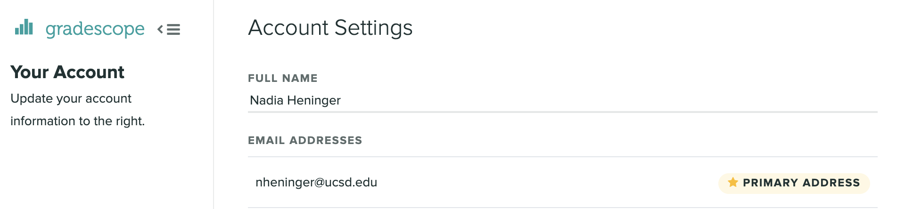
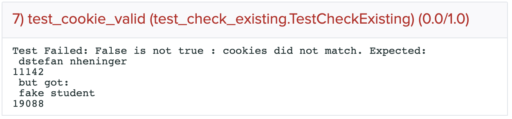

PA1: Buffer Overflows Winter 2022
Due: Thursday, January 20 at 6:00pm
This is a group project; you can work in a team of size at most two and submit one project per team. You are not required to work with the same partner on every project. You and your partner should collaborate closely on each part.
You have two late days that you may use to turn in work past the deadline over the entire quarter. A late day is a contiguous 24-hour period. Both you and your partner will be charged for every late day that you use, and you both must have late days to use them. These late days are intended to cover your extension needs for usual circumstances: brief illness, busy with other classes, interviews, travel, extracurricular conflicts, and so on. You do not need to ask permission to use a late day.
The code and other answers you submit must be entirely your team's own work. You may discuss the conceptualization of the project and the meaning of the questions, but you may not look at any part of someone else’s solution or collaborate with anyone other than your partner. You may consult published references, provided that you appropriately cite them (e.g., with program comments).
Solutions must be submitted to Gradescope.
Introduction
This project will introduce you to control-flow hijacking vulnerabilities in application software, including buffer overflows. We will provide a series of vulnerable programs and a virtual machine environment in which you will develop exploits.
Objectives
- Be able to identify and avoid buffer overflow vulnerabilities in native code.
- Understand the severity of buffer overflows and the necessity of standard defenses.
- Gain familiarity with machine architecture and assembly language.
- Understand the mechanics of buffer overflow exploitation.
Read this First
This project asks you to develop attacks and test them in a virtual machine you control. Attempting the same kinds of attacks against others’ systems without authorization is prohibited by law and university policies and may result in fines, expulsion, and jail time. You must not attack anyone else’s system without authorization! You are required to respect the privacy and property rights of others at all times, or else you will fail the course.
Setup
Buffer-overflow exploitation depends on details of the target system. You must develop and test your attacks inside the CSE127 PA1 VM, as it has been configured to disable certain security features that would complicate your work.
We recommend that you start this step early in order to make sure that you will be able to set up the assignment on your computer.
- Download the appropriate VM image for your platform and run it.
-
Windows, Linux, and Intel Macs: Download the .ova
file and import it into VirtualBox.
- M1 or Intel Mac users: Download the .zip to get a UTM file and use UTM to open it.
The username and password are both cse127.
Once the VM is up running, if you prefer to ssh in, you can ssh using cse127@localhost:4127 (e.g.ssh -p 4127 cse127@localhost)
You can usescpto copy files into or out of the VM (e.g.scp -P 4127 -r /path/to/files/ cse127@127.0.0.1:/home/cse127)
You can also use VS Code to connect to the VM via SSH, see the Microsoft docs. Jetbrains also has a similar feature, but it's a bit harder to set up, see their docs. -
Windows, Linux, and Intel Macs: Download the .ova
file and import it into VirtualBox.
-
Download the assignment starter code inside the VM with the command
wget https://cseweb.ucsd.edu/classes/wi22/cse127-a/pa/assets/pa1-starter.tar.gz. To unzip the assignment, you can usetar -xf pa1-starter.tar.gz. You should see atargetsdirectory which contains the assignment. -
Run
./build.sh. It will prompt you for usernames. Use the usernames registered in your gradescope accounts. For example, if your gradescope looks like:Then you would input
nheninger. If you're in a group, enter both usernames. The order of usernames doesn't matter.
For example, if the usernames arenheningeranddstefan, running./build.shshould generate a cookie file. Take a look at its contents.cse127@cse127:~/targets$ cat cookie nheninger dstefan 2276If you upload that to gradescope, you can confirm that the cookie you generate is the one we expect.
Make sure you have correctly generated your cookie file before you start hacking.
-
If you need to recompile your targets, you will need to run
./build.sh cleanbefore you run./build.shagain.
Resources and Guidelines
No attack tools allowed!
Except where specifically noted, you may not use special-purpose tools
meant for testing security or exploiting vulnerabilities. You must
complete the project using only general purpose tools, such as gdb.
Control-flow hijacking tutorials
Before you begin this project, review the slides from the buffer overflow lectures and attend discussion for additional details. Read “Smashing the Stack for Fun and Profit” here.
GDB
You will make use of the GDB debugger for dynamic analysis within the
VM. Useful commands include disassemble, info reg, x,
and stepi. See
the GDB help for details, and don’t be afraid to experiment.
This quick
reference may also be useful.
x86 assembly
These are many good references for x86, but note that our project targets use the 32-bit x86 ISA. The stack is organized differently in x86 and x64. If you are reading any online documentation, ensure that it is based on the x86 architecture, not x64.
If you are getting a segfault
A segfault means that you're either jumping execution to or dereferencing an address that is incorrect. This means you're on the right track because you've overwritten something and changed the program's behavior! If you are stuck as to where to start looking, try to identify the addresses the exploit has changed and work from there, i.e. make sure the addresses you intended to change have actually been changed and nothing else.
CPU Virtualization
VirtualBox requires an x86(-64) processor with hardware-assisted virtualization; such feature is called VT-x on Intel processors and AMD-V on AMD processors. If you have a Mac, virtualization should be enabled by default in firmware. If you have a PC, chances are the feature will be enabled from the factory, yet this is not always the case.
In order to enable virtualization, you will need to enter the setup menu of your BIOS or UEFI on your PC. The key combination to press immediately after startup differs by PC manufacturer, but oftentimes it is one of F2, Delete, F10, F12, or Esc. Consult your manufacturer's documentation if you are unsure. The location of the setting will also differ by manufacturer. However, the name will almost always include 'virtualization' or 'virtualization technology'.
macOS VirtualBox Security Setting
You might have trouble running VM with VirtualBox on an Intel Mac if you didn't choose the correct security settings when you were installing VirtualBox. Take a look at the top answer at https://stackoverflow.com/questions/52689672/virtualbox-ns-error-failure-0x80004005-macos.Targets
The target programs for this project are simple, short C programs with (mostly) clear security vulnerabilities. We have provided source code and a build script that compiles all the targets. Your exploits must work against the targets as compiled and executed within the provided VM.
target0: Overwriting a variable on the stack (2 points) (Easy)
This program takes input from stdin and prints a message. Your job is
to provide input that causes the program to output:
“Hi username! Your grade is A+.” (You can use either group member’s
username.) To accomplish this, your input will need to overwrite another
variable stored on the stack.
Here’s one approach you might take:
-
Examine
target0.c. Where is the buffer overflow? -
Disassemble
_main. What is its starting address? -
Set a breakpoint at the beginning of
_mainand run the program. -
Using GDB from within the VM, set a breakpoint at the beginning of
_mainand run the program.(gdb) break _main (gdb) run -
Draw a picture of the stack. How are
name[]andgrade[]stored relative to each other? -
How could a value read into
name[]affect the value contained ingrade[]? Test your hypothesis by running./target0on the command line with different inputs.
Be careful about null terminators!
What to submit
Create a Python 3 program named sol0.py that prints a line to be
passed as input to the target. Test your program with the command line:
$ python3 sol0.py | ./target0Hint: In Python 3, you should work with bytes rather than Unicode
strings. To construct a byte literal, use this syntax: b"\xnn", where
nn is a 2-digit hex value. To repeat a byte n times, you can do:
b"\xnn" * n. To output a sequence of bytes, use:
import sys
sys.stdout.buffer.write(b"\x61\x62\x63")Don’t use print(), because it automatically encodes whatever is being
printed with the default encoding of the console. We don’t want our payload
to be encoded, so we use sys.stdout.buffer.write().
target1: Overwriting the return address (3 points) (Easy)
This program takes input from stdin and prints a message. Your job is
to provide input that makes it output: “Your grade is perfect.” Your
input will need to overwrite the return address so that the function
vulnerable() transfers control to print_good_grade() when it
returns.
-
Examine
target1.c. Where is the buffer overflow? -
Examine the function
print_good_grade. What is its starting address? -
Using GDB from within the VM, set a breakpoint at the beginning of
vulnerableand run the program.(gdb) break vulnerable (gdb) run -
Disassemble
vulnerableand draw the stack. Where isinput[]stored relative toebp? How long would an input have to be to overwrite this value and the return address? -
Examine the
espandebpregisters:(gdb) info reg -
What are the current values of the saved frame pointer and return address from the stack frame? You can examine two words of memory at
ebpusing:
Essentially, this command says "e(x)amine the memory at location $ebp. Give me two words (4 bytes per word, so 8 bytes in total) and put the result in hexadecimal.(gdb) x/2wx $ebp -
What should these values be in order to redirect control to the desired function?
What to submit
Create a Python 3 program named sol1.py that prints a line to be
passed as input to the target. Test your program with the command line:
$ python3 sol1.py | ./target1When debugging your program, it may be helpful to view a hex dump of the output. Try this:
$ python3 sol1.py | hdRemember that x86 uses little endian ordering. Use Python’s to_bytes method to
output 32-bit little-endian values like so:
import sys
sys.stdout.buffer.write(0xDEADBEEF.to_bytes(4, "little"))target2: Redirecting control to shellcode (3 points) (Easy)
Targets 2 through 7 are owned by the root user and have the suid
bit set. Your goal is to cause them to launch a shell, which will
therefore have root privileges. This and several of the following targets all take
input as command-line arguments rather than from stdin. Unless
otherwise noted, you should use the shellcode we have provided in
shellcode.py. Successfully placing this shellcode in memory and
setting the instruction pointer to the beginning of the shellcode (e.g.,
by returning or jumping to it) will open a shell.
-
Examine
target2.c. Where is the buffer overflow? -
Create a Python 3 program named
sol2.pythat outputs the provided shellcode:from shellcode import shellcode import sys sys.stdout.buffer.write(shellcode) -
Disassemble
vulnerable. Where doesbufbegin relative toebp? What is the offset from the start of the shellcode to the saved return address? -
Set up the target in GDB using the output of your program as its argument:
$ gdb --args ./target2 "$(python3 sol2.py)" -
Set a breakpoint in
vulnerableand start the target. -
Identify the address after the call to
strcpyand set a breakpoint there:(gdb) break *<address>Continue the program until it reaches that breakpoint.
(gdb) cont -
Examine the bytes of memory where you think the shellcode is to confirm your calculation:
(gdb) x/32bx 0x<address> -
Disassemble the shellcode:
(gdb) disas/r 0x<address>,+32How does it work?
-
Modify your solution to overwrite the return address and cause it to jump to the beginning of the shellcode.
What to submit
Create a Python 3 program named sol2.py that prints a line to be used
as the command-line argument to the target. Test your program with the
command line:
$ ./target2 "$(python3 sol2.py)"If you are successful, you will see a root shell prompt (#). Running
whoami will output “root”. Running exit will return
to your normal
shell.
If your program segfaults, you can examine the state at the time of the
crash using GDB with the core dump: gdb ./target2 core. To enable
creating core dumps, run ulimit -c unlimited. The file core won’t
be
created if a file with the same name already exists. Also, since the
target runs as root, you will need to run it using sudo ./target2 in
order for the core dump to be created.
target3: Overwriting the return address indirectly (3 points) (Medium)
In this target, the buffer overflow is restricted and cannot directly overwrite the return address. You’ll need to find another way. Your input should cause the provided shellcode to execute and open a root shell.
What to submit
Create a Python 3 program named sol3.py that prints a line to be used
as the command-line argument to the target. Test your program with the
command line:
$ ./target3 "$(python3 sol3.py)"target4: Beyond strings (3 points) (Medium)
This target takes as its command-line argument the name of a data file it will read. The file format is a 32-bit count followed by that many 32-bit integers (all little endian). Create a data file that causes the provided shellcode to execute and opens a root shell.
Hint: First figure out how an attacker can cause a buffer overflow in
this program. Note that the read_elements function
breaks the for-loop once the end of the file is reached, so the
32-bit count does not need to be truthful.
What to submit
Create a Python 3 program named sol4.py that outputs the contents of a
data file to be read by the target. Test your program with the command
line:
$ python3 sol4.py > tmp; ./target4 tmptarget5: Bypassing DEP (3 points) (Medium)
This program resembles target2, but it has been compiled with data
execution prevention (DEP) enabled. DEP means that the processor will
refuse to execute instructions stored on the stack. You can overflow the
stack and modify values like the return address, but you can’t jump to
any shellcode you inject. You need to find another way to run the
command /bin/sh and open a root shell.
What to submit
Create a Python 3 program named sol5.py that prints a line to be used
as the command-line argument to the target. Test your program with the
command line:
$ ./target5 "$(python3 sol5.py)"For this target, it’s acceptable if the program segfaults after the root shell is closed.
Warning: Do not try to create a solution that depends on you manually setting environment variables. You cannot assume that the autograder will run your solution with the same environment variables that you have set.
target6: Variable stack position (3 points) (Medium)
When we constructed the previous targets, we ensured that the stack
would be in the same position every time the vulnerable function was
called, but this is often not the case in real targets. In fact, a
defense called ASLR (address-space layout randomization) makes buffer
overflows harder to exploit by changing the starting location of the
stack and other memory areas on each execution. This target resembles
target2, but the stack position is randomly offset by 0–255 bytes each
time it runs. You need to construct an input that always opens a root
shell despite this randomization.
What to submit
Create a Python 3 program named sol6.py that prints a line to be used
as the command-line argument to the target. Test your program with the
command line:
$ ./target6 "$(python3 sol6.py)"Warning: If you see any output before the root shell is opened, you have not done this target correctly and your solution will not be accepted by the autograder.
target7: Return-oriented programming (4 points) (Extra Credit) (Hard)
This target is identical to target2, but it is compiled with DEP
enabled. Implement a ROP-based attack to bypass DEP and open a root
shell.
It will be helpful to use a tool such as ROPgadget; this is an exception
to
the “no attack tools” policy. The ROPgadget command is already
installed on the provided VM. View its usage by running ROPgadget -h. The
--binary, --badbytes, --multibr, and
--ropchain flags will be particularly helpful.
-
Though there are a number of ways you could implement a ROP exploit, for this target you should use the
setuidsyscall to become root, followed by theexecvesyscall to run the/bin/shbinary. This is equivalent to:setuid(0); execve("/bin/sh", 0, 0); -
For an extra push in the right direction,
int 0x80is the assembly instruction for interrupting execution with a syscall. If the EAX register contains the number 23, the syscall will besetuid; if it contains 11, the syscall will beexecve. You need to figure out what values you need for EBX, ECX, and EDX, and set them using ROP gadgets! -
We recommend that you start by getting the
execvecall to work on its own, withoutsetuid. When you do this correctly, it will open a shell, but you won’t be root. Then modify your solution to make it callsetuidfirst, and you’ll get a root shell.
What to submit
Create a Python 3 program named sol7.py that prints a line to be used
as the command-line argument to the target. Test your program with the
command line:
$ ./target7 "$(python3 sol7.py)"For this target, it’s acceptable if the program segfaults after the root shell is closed.
Note: Tutors/TAs will not offer help for the extra credit problem.
Frequently Asked Questions
Q: I'm getting an "ignored null byte in input" but I didn't put any null bytes in my input.
A: Targets 2, 3, 5, 6, and 7 require you to pass in a value as a
command-line argument, but arguments in Unix cannot contain null bytes.
(The other targets, which read data from stdin or a file, don't face this
challenge.)
Using target 2 as an example, you can examine the exact bytes of your solution using this command:
$ python3 sol2.py | hdDo you see a null byte? Something in your Python code like this example may be causing it:
(0xFF).to_bytes(4, little)This will format the integer as 4 bytes in little endian. If the value is too small, it will be padded with zeros, such that the line produces bytes 0xFF, 0x00, 0x00, and 0x00. It is also possible that an address you're trying to use happens to have a null byte. In that case, try to find an alternative way to accomplish what you're trying to do by, for example, using a copy of the data located at a different address, or overwriting a different function's return address.
Q: I get a root shell when I run
sudo ./targetX "$(python3 solX.py)". Am I done?
A: No! You should only run ./targetX "$(python3 solX.py)" without
sudo. If you run it under sudo,
then your shells will always be spawned as the root user, whether you have
accomplished
the task of opening a root shell or not.
Q: My solution works in GDB but not from the command line.
A: The most likely explanation is that you're referencing data from argv[].
Since argv[]
comes from outside of _main's stack frame, its position can vary depending
on the size of the environment and arguments, which can be slightly different when
running under gdb. The best solution is to find the data you need in the stack
frame of the vulnerable function, rather than from argv[].
Q: I'm tired of starting gdb over and over with my new input, is there a way to just run it again with new args without restarting it?
A: Instead of running gdb every time, you can just run run $(python3 solX.py) in
the same
gdb instance, and it should restart with the output of your updated python script (or use
run or r without arguments, as this will use the last arguments
given).
Q: When I try to rebuild the cookie, I get an error like:
Traceback (most recent call last):
File "/home/cse127/targets/./build.py", line 120, in module
generate(workdir, offsets, rootdir, 0xffff_0000 - cookie)
File "/home/cse127/targets/./build.py", line 96, in generate
with open(output_file, 'wb') as out:
PermissionError: [Errno 13] Permission denied: '/home/cse127/targets/target0'
A: Remember to run ./build.sh clean before you run ./build.sh
again.
Q: I'm sure my cookie is right, and it looks identical to the one in the autograder, but the autograder isn't accepting it!
A: The cookie generated by the script doesn't have an end of file newline. Many IDEs automatically add this newline, so it's a very subtle issue. Maybe your IDE has added a newline at the end of your file without you knowing about it. See here on how to resolve this using vim.
Q: I have trouble using UTM on M1 Mac or VirtualBox on other platforms. Or I want to run UTM headlessly.
A:
The UTM file can work on other platforms as well but you need to install
qemu and run this command in the same directory where you stored the .utm file: (UTM is just a wrapper around qemu)
qemu-system-x86_64 \
-cpu qemu64 \
-m 2048 \
-device e1000,netdev=net0,mac=E2:ED:57:F0:5A:E5 \
-netdev user,id=net0,hostfwd=tcp::4127-:22 \
-drive file=./CSE127-PA1.utm/Images/cse127pa1.qcow2
To Run it headlessly, add -nographic -device sga to the argument list.
Submission Details
- Submit the following files as a group submission on Gradescope.
sol[0-6].pysol7.py(only needed for EC)cookie
- The Gradescope autograder will not test your submission when you submit, only check for
the Python solution files and
whether the provided cookie is what we expect.
You will need to make sure you are satisfied with the correctness of your submission when you submit.
Again, the score on Gradescope is not your score for the assignment and is not related to your score.
8.0/8.0 does not guarantee any points on the assignment, but you do need to pass the sanity checks to have any possibility of getting points.
If you do not pass the Cookie validity test, you won't pass any of the actual tests.
Your files can make use of standard Python 3 libraries and the provided
shellcode.py, but they must be otherwise self-contained. Do not modify
or include the targets, build script, helper.c, shellcode.py, etc.
Be
sure to test that your solutions work correctly in an unmodified copy of
the provided VM, without installing or updating any packages or changing
any environment variables.